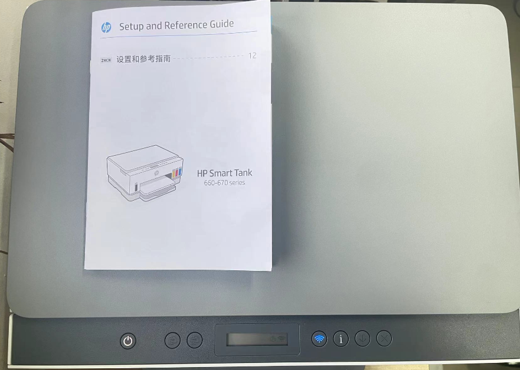

306新打印机使用指南¶
感谢罗老师赵老师经费支持，感谢思文哥提供工位和电脑
本打印机优点：双面彩打复印，加墨方便，支持wifi和微信传文件
缺点：龟速打印

如何使用 （受限于校园网和辣鸡电脑，目前还是乖乖用远程连接打印）
（1）打开windows远程桌面连接，输入ip地址 10.92.152.233
（2）账户名：Zhang SW 密码：空格键
（3）复制你要打印的文件粘贴到远程桌面，打印完记得删除
注意事项
（1）打印机上放了一本手册，碰到问题请先翻阅手册，翻阅完请放回原处
（2）选择双面打印的话，耐心等待，没打完不要把纸拿走，否则会卡住
（3）拔掉打印机电源重新插上，它会自己恢复，能解决大部分问题
（4）保修卡之类的都在书架上的打印机箱子里
（5）批量打印请最好不要彩打